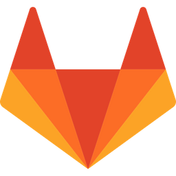
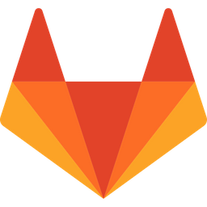
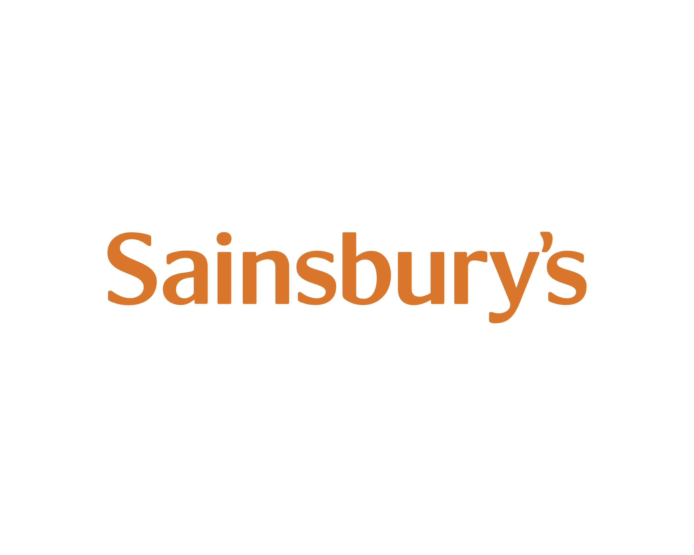
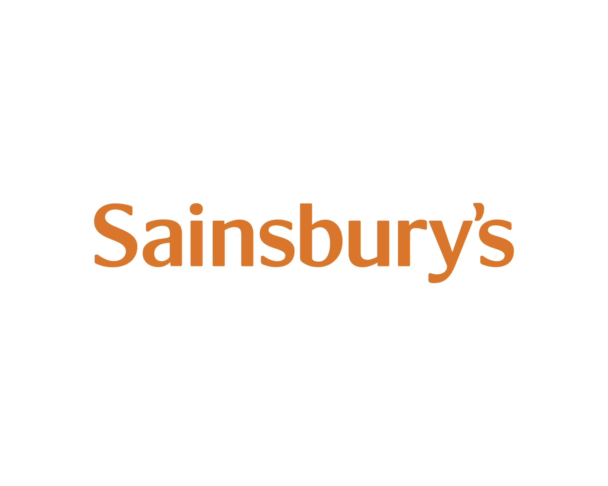

Criação

O vue.js foi criado por Evan You, que com 35 anos é um desenvolvedor independente mas que já trabalhou em grandes empresas como a Google. O framework foi criado em 2014 após Evan You se revoltar com o Angular, framework que ele usava durante sua carreira na Google. Você pode acessar a documentação do Vue clicando aqui.
O que é?
É um framework JavaScript open source para a criação de aplicações web, criado por Evan You em 2014. O Vue.js possibilita criar aplicações de forma reativa. O Vue.js faz a utilização de um DOM virtual, o que faz com que seja extremamente performático na maioria das situações. Além disso, conta com uma arquitetura muito bem estruturada por meio da criação de componentes reusáveis.
Este framework é muito utilizado para criar aplicações SPA (Single Page Applications) e também para desenvolver vários outros tipos de interfaces, com foco na interação e experiência do usuário. Atualmente e não à toa, o Vue.js está entre os frameworks Javascript para criação de interfaces mais populares do mundo, devido à sua baixa curva de aprendizado, sua versatilidade e por oferecer uma solução bem completa – contando até mesmo com uma CLI, o Vue CLI.
Além disso, possui uma boa documentação oficial (inclusive em português) e sua comunidade é bem ativa e não para de crescer. Dessa forma, o Vue.js é um dos frameworks prediletos por parte dos desenvolvedores, como podemos ver pelo StackOverflow Insights.
Para que serve?
Com mais de 150k de estrelas no Github, Vue.JS está entre os frameworks Javascript para criação de interfaces mais populares do mundo. Há quem diga que, entre os Desenvolvedores, a aprovação de Vue JS beira os 90%.
Com versatilidade, modularização e facilidade de aprendizado, o framework vem se tornando a escolha número 1 entre profissionais da área que procuram criar websites profissionais e de alto desempenho. Apostando em uma arquitetura enxuta, Vue requer uma configuração mínima na criação de um projeto e pode ser facilmente integrado com uma aplicação já existente através de uma simples tag script.
Essa característica coloca o framework em um lugar de destaque tanto para desenvolvedores, devido a facilidade de aprendizado e estrutura limpa do projeto, quanto para grandes empresas. Isso acontece graças à fácil integração de um novo colaborador ao um projeto já em andamento, mesmo sem um conhecimento prévio da ferramenta.
Quem usa?
Se você olhar individualmente para empresas do Silicon Valley, não vai encontrar empresas grandes usando Vue, porque elas naturalmente tendem a usar tecnologias apoiadas por empresas como Facebook e Google. No entanto tem uma presença boa em empresas de desenvolvimento/consultoria, há um projeto feito por terceiros para o Facebook (sim, essa página foi feita com Vue). Se tratando do uso empresarial, o Vue tem uma lista muito mais internacional, incluindo a “big three” chinesa de tecnologia: Alibaba, Baidu e Tencent, e algumas empresas de destaque mais valorizadas no momento, por exemplo Xiaomi, Ele.me e DJI. (Grande parte disso é por que sou muito ativo na comunidade chinesa de JS)
No Japão, Vue também é usado por empresas mais conceituadas como Line corp & Nintendo. No Reino Unido a Sainsbury's esta começando a usar Vue.js em larga escala também. Além disso, existem ótimos projetos de código aberto que agora usam Vue.js extensivamente, por exemplo: Laravel, GitLab e PageKit.
 

 
